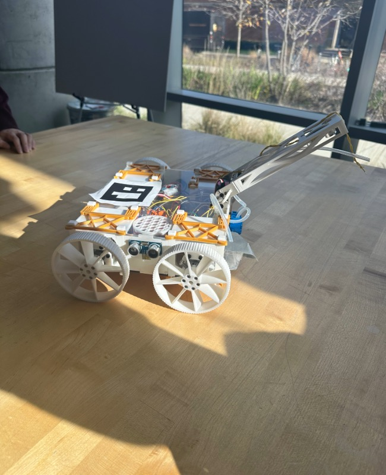

Prospective Software Engineer
Hi, I'm Peter Njoroge
From Baltimore, MD

Prospective Software Engineer

My name is Peter Njoroge, I am a Rising Sophmore Computer Engineering student at the University of Maryland, College Park, enrolled in the James A. Clark School of Engineering and the University Honors College. I have a strong passion for software engineering and am eager to pursue a career in this field. Outside of the classroom, I am extremely passionate for community service and am eager to give back. My long-term goal in tech is to create opportunities for the less fortunate to gain experience in technology, computer science specifically. Currently, I am actively seeking internship opportunities in software engineering roles.
Skills
Experience
Education
Willing and able to provide amazing production and service as a Software Engineeing Intern.
Willing and able to provide amazing production and service as a Cloud Engineeing Intern.
Willing and able to provide amazing production and service as a Data Analysis and or IT intern.
Developed a dynamic sneaker database website, resulting in a user-friendly platform that allows visitors to view detailed information about various sneaker models, by leveraging Express.js and Node.js for server-side routing and handling HTTP requests and HTML/CSS and JavaScript for the User Interface.

Planned, constructed, and developed a specialized Automated Guided Vehicle (AGV) for water sampling tasks. Orchestrated AGV navigation to autonomously collect a 20ML water sample, utilizing Ultrasonic Sensor for depth measurement, DIY salinity sensor for water assessment, and integrated Arduino Color Sensor for pollution detection.